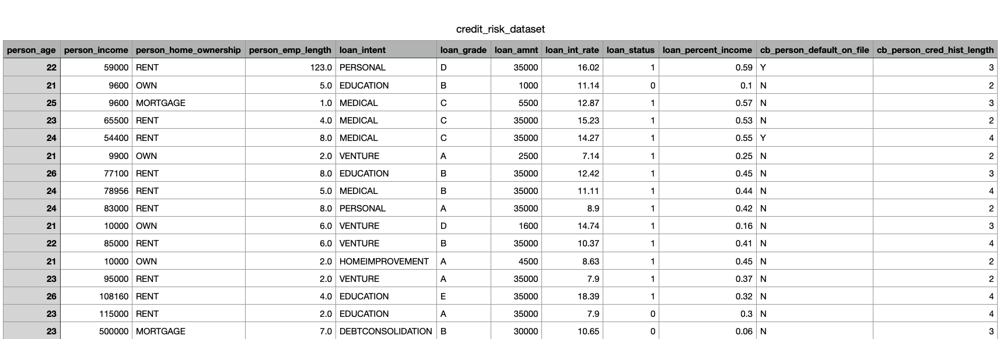

About This Project
This project explores the use of data preprocessing, manipulation, visualization and statistical analysis to assess and predict credit risk. It aims to highlight key financial and demographic factors influencing credit default risk, providing insights valuable to financial institutions and researchers.
Project Goals and Motivation
This project focuses on applying data visualization techniques and libraries learned in DS4200 to explore and analyze credit risk data. Through effective use of static, dynamic, and interactive visualizations, we aim to highlight the relationships between demographic and financial factors and their impact on credit default risk. This approach emphasizes the importance of clear, insightful presentation in understanding complex datasets and communicating findings to diverse audiences.
- Model repayment likelihood and predict credit default risk.
- Identify trends that assist in managing credit risk effectively.
- Explore and visualize relationships between demographic and financial factors.
Reference Papers
Below are two key references that provide context and support for our credit risk analysis:
- This article (ScienceDirect) examines credit risk, encompassing default risk and portfolio risk in financial transactions. It identifies external factors like economic conditions and commodity prices, as well as internal weaknesses such as inadequate loan policies and borrower assessments, that influence credit risk. The paper emphasizes the importance of measuring, hedging, and monitoring credit risk to mitigate potential losses and improve risk management in banking and financial institutions.
- This paper (Econstor) investigates the relationship between payment performance and various demographic and financial variables among consumer credit clients at a private bank in Turkey. Using logistic binary regression, the study finds that financial factors, rather than demographic characteristics, significantly influence repayment performance. Specifically, longer maturity periods and higher interest rates are associated with increased credit default risk. The findings suggest that bankers should adjust financial variables strategically to reduce credit default risk.
Dataset Overview
This dataset, sourced from Kaggle (Credit Risk Dataset), includes 32,581 observations and 12 variables described below. The dataset provides a detailed overview of borrower profiles, allowing for an in-depth analysis of factors that influence the risk of credit defaulting.
Before analysis, the data underwent cleaning to ensure quality and usability. This included handling missing values, standardizing numerical attributes (e.g., loan amount and income), and encoding categorical variables like loan intent and home ownership. During the exploration, we noted the absence of certain attributes, such as credit score and geographic location, which could have provided additional insights into borrower risk profiles. Despite this limitation, the dataset remains highly valuable for analyzing credit risk trends and predicting default probabilities.
| Feature Name | Description |
|---|---|
| person_age | Age of the borrower (in years). Typical range: 20–144, with most between 23–30. |
| person_income | Annual income of the borrower. Ranges from $4,000 to $6,000,000. |
| person_home_ownership | Type of home ownership: Rent, Own, or Mortgage. |
| person_emp_length | Employment length (in years). |
| loan_intent | Purpose of the loan (e.g., Education, Debt Consolidation). |
| loan_grade | Loan grade (A-G, with A being the highest). |
| loan_amnt | Loan amount requested (ranges from $500 to $35,000). |
| loan_int_rate | Interest rate of the loan (ranges from 5.42% to 23.22%). |
| loan_status | Loan status (0 for non-default, 1 for default). |
| loan_percent_income | Percentage of borrower’s income allocated to the loan. |
| cb_person_default_on_file | Indicates if the borrower has a history of defaults (yes/no). |
| cb_person_cred_hist_length | Length of the borrower’s credit history (in years). |
Here’s a preview of the data:
For full details, visit the dataset source on Kaggle: Credit Risk Dataset.
Conclusion and Summary
The Conclusion From Our Analysis is as Follows:
This project focuses on applying data visualization techniques and libraries learned in DS4200 to explore and analyze credit risk data. Through effective use of static, dynamic, and interactive visualizations, we aim to highlight the relationships between demographic and financial factors and their impact on credit default risk. This approach emphasizes the importance of clear, insightful presentation in understanding complex datasets and communicating findings to diverse audiences.
Summary of Findings:
Descriptive Statistics:
Person Age: The average age of individuals in the dataset is approximately 27.73 years, with a standard deviation of 6.31 years.
The age range spans from 20 to 144 years, with the majority of individuals falling between 23 and 30 years.
Person Income: The average income is around $66,649, with a significant standard deviation of $62,356, indicating a wide range of income levels.
The income ranges from $4,000 to $6,000,000, with the interquartile range (IQR) between $39,480 and $80,000.
Loan Amount: The average loan amount is approximately $9,656, with a standard deviation of $6,330.
Loan amounts range from $500 to $35,000, with the IQR between $5,000 and $12,500.
Loan Interest Rate: The average interest rate is about 11.04%, with a standard deviation of 3.23%.
Interest rates range from 5.42% to 23.22%, with the IQR between 7.90% and 13.48%.
Loan Status: The dataset includes both fully paid and defaulted loans, with a mean loan status of 0.2166, indicating that approximately 21.66% of the loans are defaulted.
Loan Percent Income: On average, loans constitute about 16.95% of an individual's income, with a standard deviation of 10.64%.
The loan percent income ranges from 0% to 83%, with the IQR between 9% and 23%.
Conclusion:
The analysis of the dataset reveals several key insights:
- Age and Income Distribution: The majority of loan applicants are young adults, primarily between the ages of 20 and 40. There is a wide range of income levels among the applicants, with a significant number of individuals earning between $40,000 and $80,000 annually.
- Loan Amount and Interest Rates: The average loan amount is around $9,656, with higher loan amounts being more common among certain age groups. Interest rates vary significantly, with an average rate of 11.04%, indicating that loan terms can differ widely based on various factors.
- Loan Intent: Different loan intents show varying distributions of loan amounts and income levels. Understanding the intent behind loans can provide valuable insights into the financial behavior and needs of different age groups.
- Loan Default Rates: Approximately 21.66% of the loans in the dataset are defaulted, highlighting the importance of assessing credit risk and borrower reliability. With the age of credit, age of person, and grade being the most indicative of whether or not they would default on the loan.
Future Work:
Future work on this analysis could benefit from incorporating additional attributes that are currently missing from the dataset, such as credit scores, geographic location, or borrower expenses, which are critical factors in assessing credit risk more comprehensively. Including more granular data on
loan repayment history or external economic indicators, such as unemployment rates or inflation, could further enhance the predictive accuracy of credit risk models. Additionally, implementing advanced machine learning models like Gradient Boosting or Neural Networks could help capture
non-linear relationships between variables and improve prediction performance. Expanding the scope of the dataset to include data from multiple institutions or regions could also help generalize findings and reduce potential biases. Finally, integrating interactive dashboards or real-time
data pipelines would enable continuous monitoring and analysis of credit risk trends, providing actionable insights for financial decision-making.
Team Responsibilities
Each team member contributed to the project as follows:
Overview of Visualizations
Our visualizations are categorized as follows:
- Credit and Loan Grade Trends: Analyze patterns in loan grades, default rates, and interest rates.
- Credit Risk and Borrower Behavior: Explore relationships using filters for loan grade, age, and income.
- Loan Interest Rate and Percent of Income: Investigate the relationship between loan percent income and interest rates.